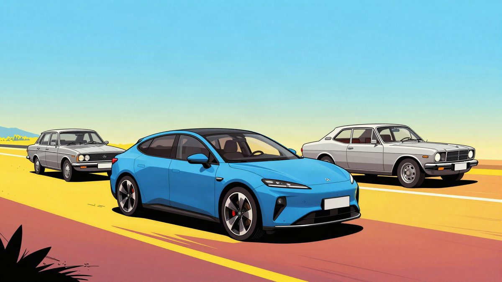
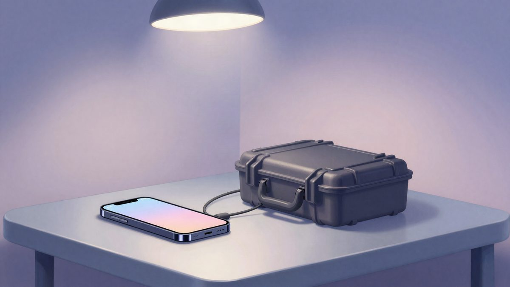
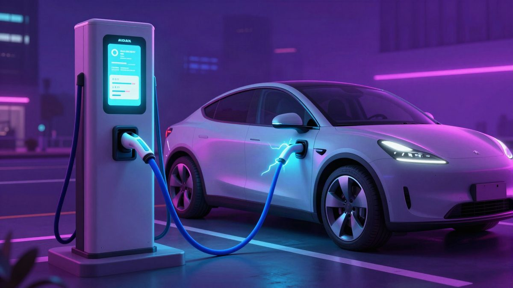

Kineski brendovi u 39 država prodaju više od japanskih, BYD je u Njemačkoj utrostručio prodaju

Kineski automobilski brendovi u prvih devet mjeseci ove godine imaju veći tržišni udio od japanskih u 39 od 93 praćene države. U Njemačkoj je BYD više nego utrostručio prodaju, a Leapmotor je u Italiji porastao 11 puta. Japanski proizvođači i dalje vode u SAD-u i Indiji.
Kineski automobilski brendovi imaju veći tržišni udio od japanskih u 39 od 93 države za koje se može pratiti prodaja. Podaci se odnose na prvih devet mjeseci ove godine. U 14 tih država preokret se dogodio tek u 2025., a osam od njih je u Europi.
Njemačka je najveće europsko tržište novih automobila i dom jake domaće industrije. Kineski brendovi tamo su udio povećali za dva postotna boda, na 6 posto, dok je udio japanskih pao na 5 posto. Najviše je pridonio BYD, čija se prodaja u Njemačkoj više nego utrostručila. Izvor to povezuje s razvijenom ponudom električnih i hibridnih modela.
Italija i Leapmotor
U Italiji su kineski proizvođači zajedno narasli za 6 postotnih bodova, na 12 posto tržišta. Posebno se ističe Leapmotor. Surađuje sa Stellantisom, pa je brzo uspostavio lokalnu prodajnu i servisnu mrežu. Prodaja njegovih električnih automobila u Italiji u devet mjeseci porasla je 11 puta, a među isključivo električnim vozilima Leapmotor ima 25 posto udjela.
Razlozi rasta
Kao razloge izvor navodi globalni prelazak na električna vozila i promjenjive cijene goriva, zbog kojih su kupci sve otvoreniji prema električnim modelima. Kineski proizvođači imaju razvijenu tehnologiju baterija, motora i upravljačke elektronike te cjelovit opskrbni lanac. Njihovi automobili nude dobar omjer performansi i cijene.
Brz rast bilježe i druga tržišta u razvoju, među njima Brazil. Razlika se smanjuje i u jugoistočnoj Aziji, tradicionalno jakoj regiji za japanske brendove. U Tajlandu je udio japanskih marki pao za 8 postotnih bodova, na 56 posto, a udio kineskih porastao je za 11 bodova, na 32 posto.
Japanski proizvođači i dalje drže jasnu prednost na nekim velikim tržištima. U SAD-u imaju 32 posto, a u Indiji 44 posto tržišta.
Izvor: MyDrivers (快科技)
Povezani članci

Cellebrite alati u Europi: izvlačenje podataka s telefona tražitelja azila, aktivista i novinara10. studenoga 2026.
BYD, Chery i Geely ulaze u utrku u brzom punjenju: do 500 km dometa u pet minuta16. studenoga 2026. Claude i ChatGPT na istom otoku: Claude prvi napao tek u 55. godini simulacije14. studenoga 2026.
Claude i ChatGPT na istom otoku: Claude prvi napao tek u 55. godini simulacije14. studenoga 2026.